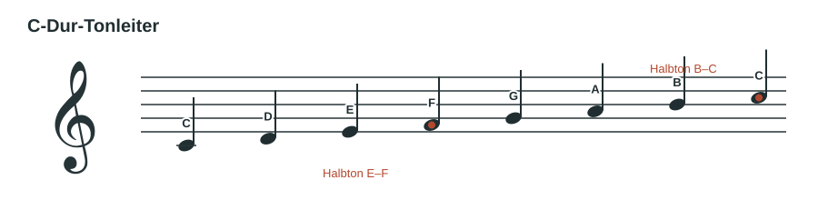

Lektion 01
So ist die C-Dur-Tonleiter aufgebaut.
Internationale Notennamen: Wir unterrichten mit internationalen Notennamen: B ist der natürliche Ton, Bb heißt B-flat. Auf der Gitarre heißt die Saite B-Saite.
Eine Dur-Tonleiter entsteht aus dieser Folge von Abständen: Ganzton – Ganzton – Halbton – Ganzton – Ganzton – Ganzton – Halbton. Auf der Gitarre entspricht ein Halbtonschritt dem nächsten Bund; ein Ganztonschritt überspringt einen Bund.
Beginnen wir bei C, führt dieses Muster zu den Tönen C–D–E–F–G–A–B–C. Die Halbtonschritte liegen zwischen E–F und B–C. Alle übrigen benachbarten Töne liegen einen Ganzton auseinander.

Wenn du keine Notenschrift lesen möchtest, kannst du die Tonleiter über die ausgeschriebenen Notennamen lernen. Notenlesen ist dafür keine Voraussetzung. Es ist trotzdem nützlich, weil du damit Tonfolgen auf Papier und in anderen Lernmaterialien schneller erkennst.
Im Melodiekurs 1 werden Tonleitern, Tonstufen und Notation ausführlicher behandelt. Dort kannst du das Thema vertiefen, wenn du möchtest.
Auf der A-Saite beginnt die C-Dur-Tonleiter bei C im dritten Bund; auf der B-Saite bei C im ersten Bund. Mit dem Knopf ergänzst du die Töne der B-Saite im selben Griffbrettbild. Die A-Saiten-Töne bleiben dabei sichtbar:

Merke: In C-Dur sind die Töne C, D, E, F, G, A und B. Von B geht es wieder zu C, eine Oktave höher.
Übe: Spiele die C-Dur-Tonleiter mehrmals auf der A-Saite und auf der B-Saite. Singe die Töne am besten mit und präge dir den Klang der Tonleiter ein.
Lektion 02
Ergänze die fehlende 4 und 7.
Die Dur-Pentatonik enthält die Tonstufen 1, 2, 3, 5 und 6. Es fehlen 4 und 7. In C-Dur sind das F und B. Wenn wir sie ergänzen, erhalten wir die vollständige C-Dur-Tonleiter: C–D–E–F–G–A–B.
Die Griffbrettansicht zeigt jetzt alle sieben Töne in den fünf Positionen. Die zusätzlichen Töne F und B sind gold markiert. Drehe das Griffbrett oder wechsle zwischen Notennamen und Tonstufen.

Zum Erkunden: Folge auf einer Saite langsam den Notennamen. Achte darauf, dass F zwischen E und G liegt und B direkt vor dem nächsten C.
Lektion 03
Die Dur-Tonleiter in Position 1 hervorheben.
Die Grafik zeigt dieselben Notenfarben wie in der vorherigen Lektion. Mit „Tonleiterbereich umranden“ markierst du den gesamten Griffbereich der C-Dur-Tonleiter in Dur-Position 1 mit einem einzigen roten Rahmen: Er umfasst Bund 7 bis 10 über die tiefe E-, A- und D-Saite. Das B auf der tiefen E-Saite in Bund 7 bleibt ausgespart.